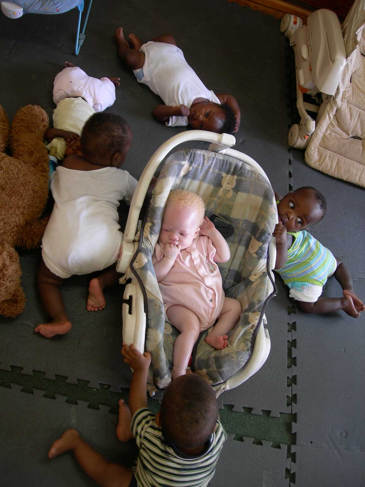
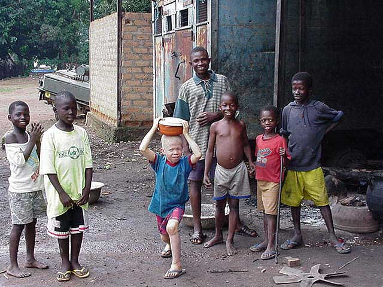
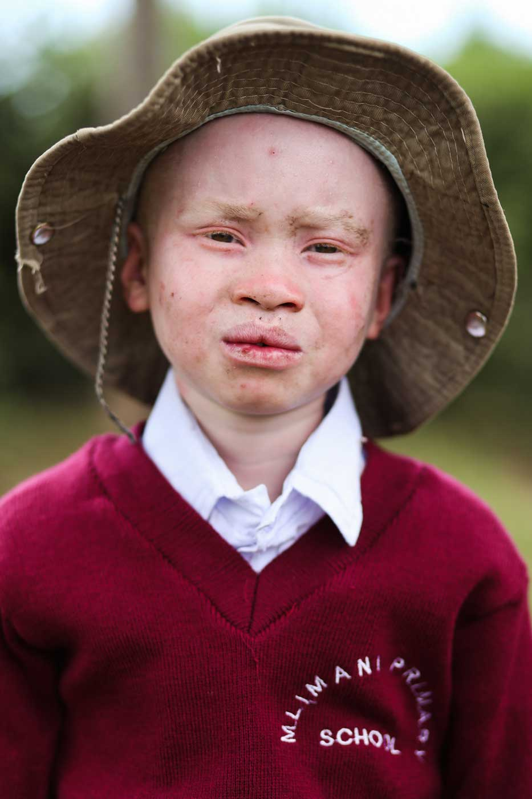
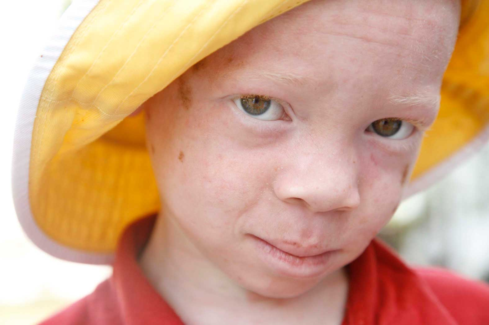

Welcome to NOAH

This is a place where people and families affected by albinism and others interested in learning more about the condition can ask questions and share experiences.
Thanks for reading, we hope you visit often!
Highlights and Comments
"Knowing that my baby can be in a safe environment is priceless." - Kowani T.
"Finally we got water at our community, Thank you." - Mali G.
"Thank s NOAH for your support, Nicholas is now graduating from elementary." - Nelly M.
"Amir's skin treatment is done! most of his skin marks are gone." - Bianca D.
Join the Nationwide NOAH Party! http://bowl.albinism.org
NOAH-Albinism
Facebook
Albinism is so beautiful.
@AlbinismCanada
Twitter
So far, bowl-a-thon events are being held in 18 states across the country.
NOAH-Albinism
Facebook
NOAH's 2015 Bowl-a-thon Season Kicks Off in Illinois!
NOAH-Albinism
Facebook
NOAH Canada has hit twitter....hello everyone!
@AlbinismCanada
Twitter